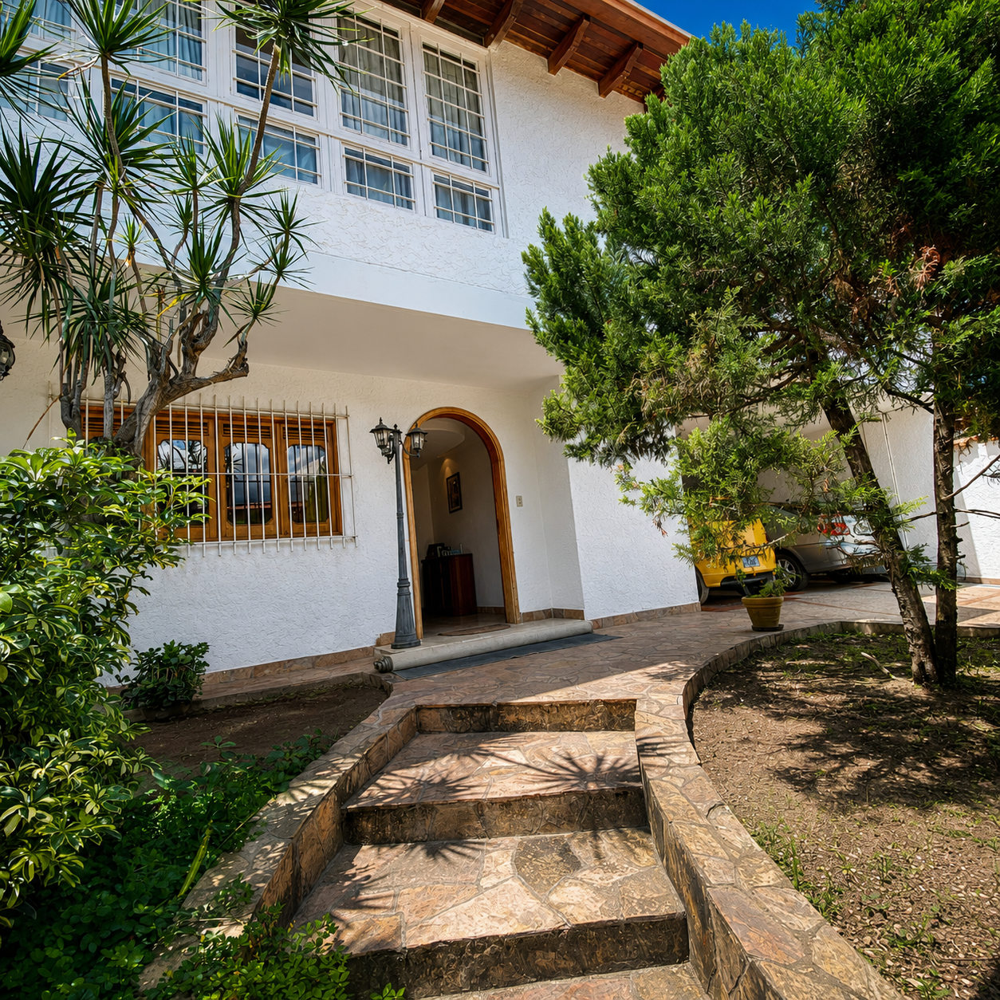

Propiedad exclusiva · Caracas
Amplitud, privacidad y vista al Ávila
Una casa para disfrutar
El refugio familiar que Caracas merece
Vive en una de las urbanizaciones más tranquilas y frescas de Caracas. Esta majestuosa casa combina amplitud, privacidad y espacios diseñados para disfrutar en familia.
Sus terrazas, áreas sociales y hermosa vista al Ávila crean el ambiente perfecto para compartir reuniones, disfrutar atardeceres y desconectarse del ritmo de la ciudad. Todo dentro de una urbanización cerrada con doble vigilancia, excelente suministro de agua y un entorno residencial seguro.
Recorrido visual
Conoce cada espacio
20 fotografías · Pulsa para ampliar
Ficha de la propiedad
Comodidad en cada detalle
Condiciones de venta
- Forma de pago
- 50% en efectivo y 50% mediante transferencia a República Dominicana.
- Plazo de entrega
- 3 meses, con posibilidad de entrega anticipada.
- Monto mínimo
- $242.000
- Reserva mínima
- $40.000, aproximadamente 17% del monto total.
Ubicación privilegiada
Colinas de Santa Mónica
Un entorno residencial tranquilo, fresco y seguro, con una imponente vista al Ávila y acceso a los servicios de Caracas.
Solo para clientes directos
Tu próxima casa puede estar aquí
Solicita más información y coordina una visita para conocer personalmente esta propiedad.
Realizar consulta